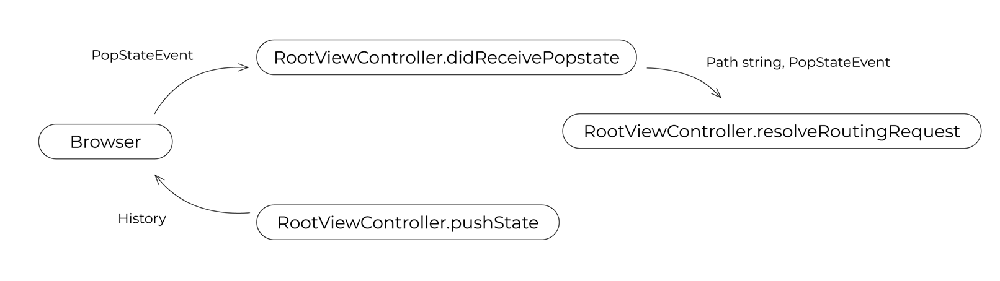

Craft-UIKit
Craft-UIKit is a JavaScript UI library for Inversion of Markup.
Web application based on Inversion of Markup inverts Markup and JavaScript.
Markup should be fully encapsulated into the shadow element in JavaScript object.
Markup principle something like this:
<Hello name="world"></Hello>
Inversion of Markup principle something like this:
viewController.append(new Hello({name:"world"}));
Mobile application devplopers are more familiar with this way.
Component

The most core element of Craft-UIKit is representedy by the base class Craft.Core.Component.
This wraps shadow host, shadow root, tree under the shadow, styles for them and its actions.
Instance of Component is identified by componentId.
By default, this is automatically generated by its packagename defined as its class variable, with appending sequencial number to be able to identify in the global scope.
If it is not defined, just used its class name for it.
The component instance is a JavaScript object.
So, you can access to the instance via its componentId from anywhere you want.
example
For example, your class has packagename MyApp.Hello.
Your componentId will be something like MyApp_Hello_0.
console:
> var hello_world = new HelloWorld();
> hello_world.loadView();
> document.body.appendChild(hello_world.view);
> MyApp_HelloWorld_0
HelloWorld {packagename: "MyApp.HelloWorld", componentId: "MyApp_HelloWorld_0", view: div#MyApp_HelloWorld_0, css: Array(1), …}
> MyApp_HelloWorld_0.view
<div id="MyApp_HelloWorld_0">...</div>
> MyApp_HelloWorld_0.shadow
#shadow-root (open)
> MyApp_HelloWorld_0.root
<div class="root">...</div>
> MyApp_HelloWorld_0.css
[style#MyApp_HelloWorld_0_1]
> MyApp_HelloWorld_0.say()
(say() is invoked -> show "Hello World!" in the page)
※ Dot(.) is converted to underscore(_).
※ componentId has suffix of auto generated serial number.
View and ViewController

The Component is concretized by View(Craft.UI.View) and ViewController(Craft.UI.DefaultViewController).
Both are sub-class of Craft.Core.Component.
View is an element packing its template, style and action.
ViewController is also a kind of View having some View elements in it, and manages them.
Your application may also have special ViewController called RootViewController(Craft.UI.DefaultRootViewController).
This is a root element of your application,
and should be set by Craft.Core.Context.setRootViewController at the start of your application.
In Craft-UIKit application, the RootViewController should also manage popstate event and history by implementing appropriate interface.
Let's see a Hello World example:
class HelloWorld extends Craft.UI.DefaultViewController {
constructor(){
super();
this.packagename = 'MyApp.HelloWorld';
}
viewDidLoad(callback){
this.hello = new Hello();
this.world = new World();
if(callback){ callback(); }
}
say(){
this.appendView(this.hello);
this.appendView(this.world);
}
style(componentId){
return `
:host { width: 100%; }
.root { display flex; flex-direction: row; }
`;
}
template(componentId){
return `
<div class='root'></div>
`;
}
}
class Msg extends Craft.UI.View {
style(componentId){
return `
.root { display: inline-block; margin: 10px; }
.msg { color: blue; }
`;
}
template(componentId){
return `
<div class='root'>
<span class='msg'>${this.msg}<\span>
</div>
`;
}
}
class Hello extends Msg {
constructor(){
super();
this.packagename = 'MyApp.Hello';
this.msg = 'Hello';
}
}
class World extends Msg {
constructor(){
super();
this.packagename = 'MyApp.World';
this.msg = 'World!';
}
style(componentId){
return super.style(componentId) + `
.msg { color: red; }
`;
}
}
Template and Style
Component has a DOM tree in this.root. This is based on template().
template() must return a HTML expression that starting with a single element.
The returning HTML is evalutated as HTML template,
and converted to a DOM fragment by Craft.Core.Component.renderView.
Its first element is used for this.root.
When you define id and class for the root element, you have to name it as 'root'.
This will simplify to cascade style-sheet of super class.
template(componentId){
return `
<div id='root' class='root'>
...
</div>
`;
}
GOOD:
<div>
<span>Hello world!</span>
</div>
BAD:
<div>
<span>Hello</span>
</div>
<div>
<span>world!</span>
</div>
Also BAD:
<!-- hello message: this is also a DOM -->
<div>
<span>Hello world!</span>
</div>
Component also has shadowed style tags in this.css.
This is defined by style() method and it should return usual style sheet expression.
You can access host element this.view by :host pseudo class name.
To cascade super class style, just append yours on it.
style(){
return super.style() + `
.msg { color: red; }
`;
}
First argument for template() and style() is its componentId (same as this.componentId).
In style method, you may not use it, but sometimes it may be required to cascade styles from your super class.
In template method, it is used for accessing its method.
Component Method
To call instance method from its template, all you have to do is just call it via ${componentId}.
class Wow extends Craft.UI.View {
say(msg){
alert(`oh ${msg}`);
}
template(componentId){
return `
<div onclick='${componentId}.say("wow")'>Say wow</div>
`;
}
}
Traditional JavaScript programmer may like self instead of componentId.
class Wow extends Craft.UI.View {
say(msg){
alert(`oh ${msg}`);
}
template(self){
return `
<div onclick='${self}.say("wow")'>Say wow</div>
`;
}
}
Indeed, this is not default behaviour.
As can be seen above, window[componentId] holds its instacne.
This is enabled by setting Craft.Core.Defaults.ALLOW_COMPONENT_SHORTCUT to true.
You may set this at the begenning of you app.
You can select this behavior, but you may love to use this shortcut.
Without this shourcut, you can call instance method like following:
onclick="window.Craft.Core.ComopnentStack.get('${componentId}').say('wow')"
Additionaly, if you know comopnentId for another instance, you can call any method via it, like as global shared function.
Public library developer shoud write its template by verbose mode using fully quolifiied component access, to be able to run without shourcut.
Component Lifecycle
Component lifecycle is just a contract with you.
If you write your own ViewController, you have to honor those definition to keep your life safe,
like as Craft.Core.Component, Craft.UI.View and Craft.UI.DefaultViewController are doing so.
In other words, while you extends those classes and keep this way, lifecycle is guaranteed.

| lifecycle method | what is |
|---|---|
| loadView | make this.view and this.css |
| viewDidLoad | Called at the end of loadView |
| viewWillAppear | Called just before appending this.view to the parent |
| viewDidAppear | Called just after this.view appended to the parent |
| viewWillDisappear | Called just before removing this.view from its parent |
| viewDidDisappear | Called just after this.view removed from its parent |
| unloadView | remove view and css |
Related method:
| method | what is |
|---|---|
| appendView | append sub-component's view |
| removeView | remove sub-component's view |
| append | alias for appendView |
| remove | alias for removeView |
Routing and RootViewController

In Craft-UIKit application, RootViewController has responsibility for routing.
At the time booting application via Craft.Core.Bootstrap,
listener for popstate is registered against RootViewController.didReceivePopstate.
DefaultRootViewController.didReceivePopstate extracts hash fragment from the current window.location,
and pass it to resolveRoutingRequest.
You have to implement your own routing logic in it. Or you have to override DefaultRootViewController.didReceivePopstate as you like.
class PageController extends Craft.UI.DefaultRootViewController {
:
resolveRoutingRequest(path,event){
let match = path.match(/(\w*)/);
let menu = match[1] || 'home';
this.showMenu(menu,event);
}
:
}
Booting application
Application entry point is Craft.Core.Bootstrap.boot.
You must kick this function when window.onload occured.
boot function requires an object containing a function named as didBootApplication.
This is your application entry point.
To start routing at booting time, you have to call didReceivePopstate of your RootViewController.
For convenience, this is implemented as DefaultRootViewController.bringup.
window.onload = function(){
Craft.Core.Defaults.ALLOW_COMPONENT_SHORTCUT = true;
Craft.Core.Bootstrap.boot({
didBootApplication : function(){
const rootViewController = new PageController();
Craft.Core.Context.setRootViewController(rootViewController);
rootViewController.bringup();
}
});
};
License
MIT